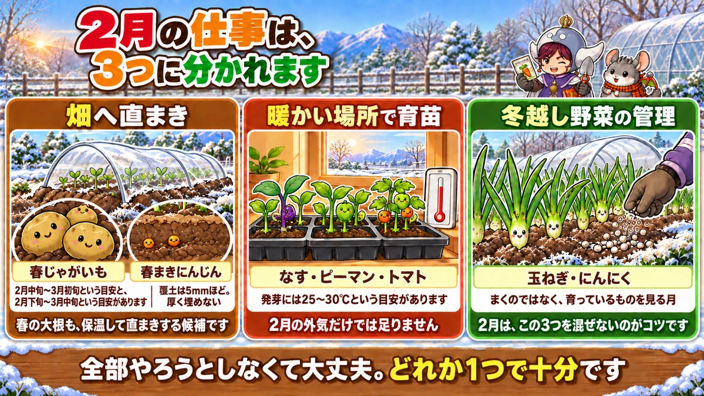
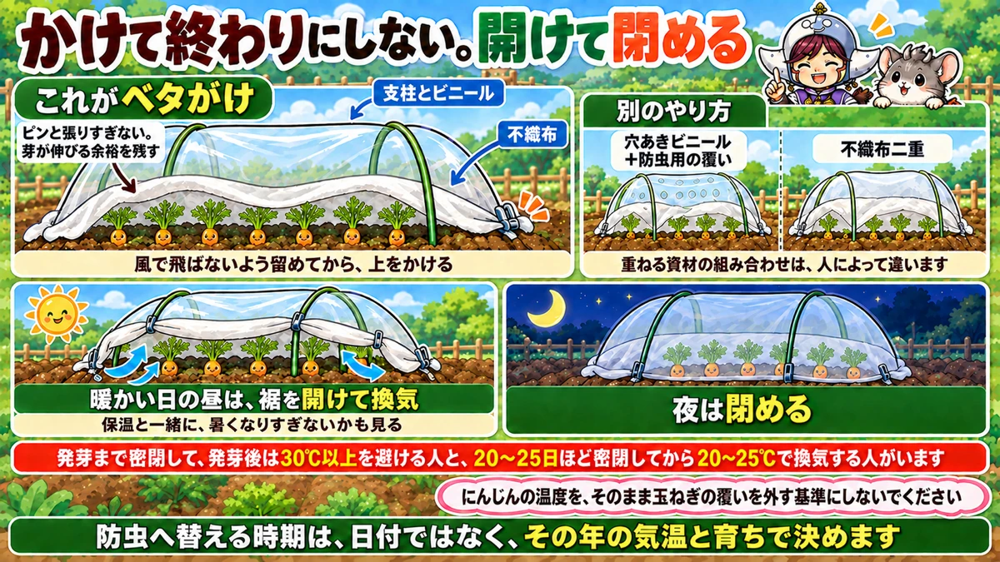
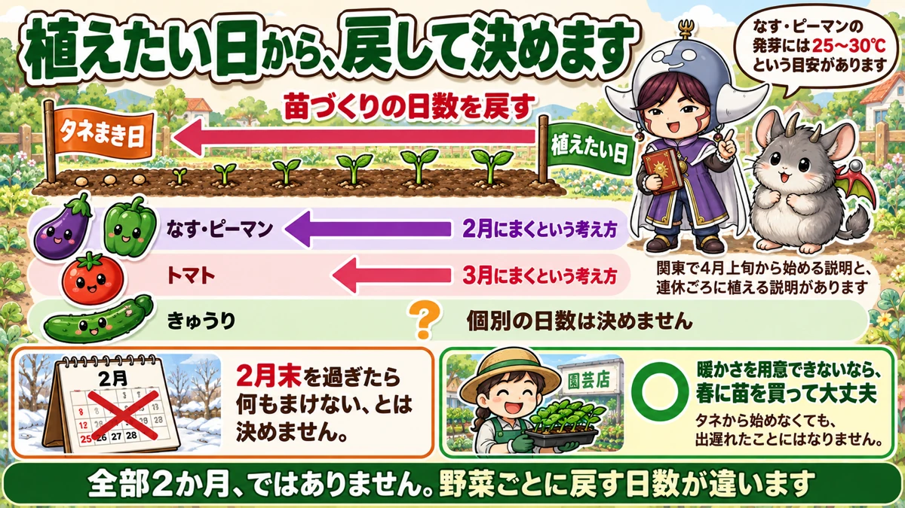
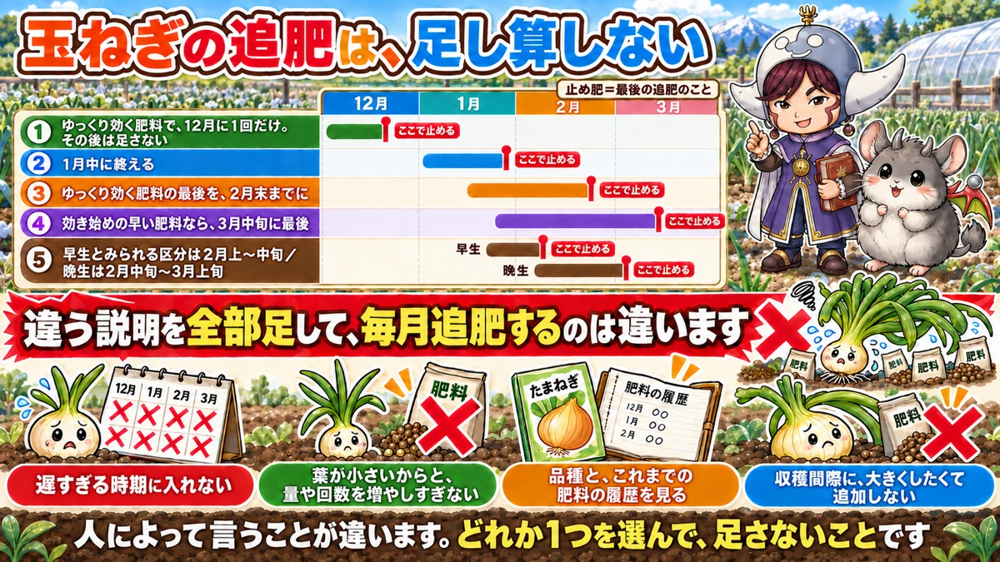
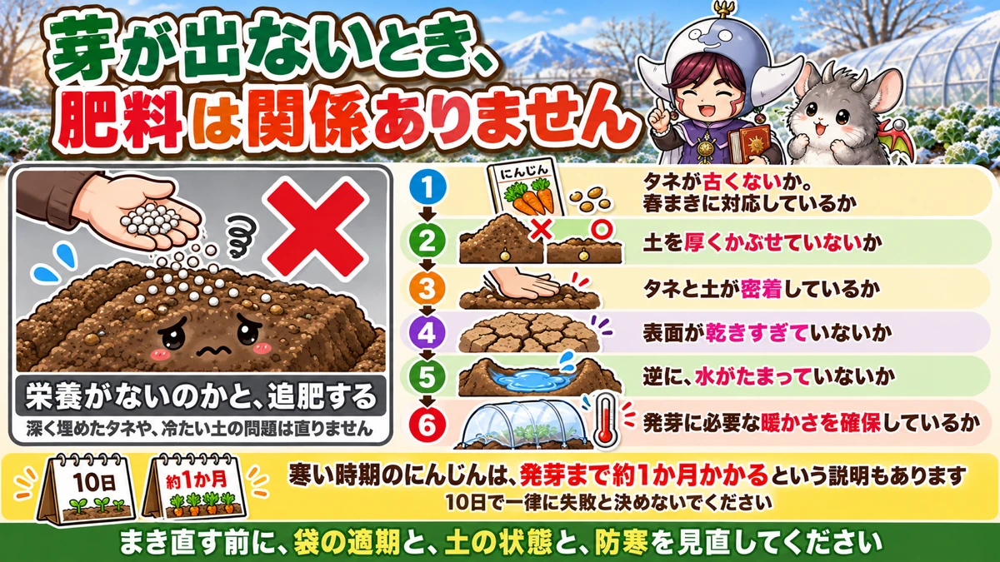

2月にまく・植える野菜｜春じゃがいも・春にんじんの二重保温・夏野菜の苗・玉ねぎの追肥
どうも、8150（えいこう）です🌱 家庭菜園歴8年、理科の教員免許を持っていて、有機・無農薬で野菜を育てています。
この記事で分かること
- 2月は、1年でいちばん寒い時期ですが、春に向けた準備が一気に動き出す月です。
- 春じゃがいもは、2月の中ごろから3月の初めに植えるのが一般的です。寒い地域や保温しない場合は、もう少し遅らせます。
- 春にんじんは、2月から種まきできます。ただし2月にまくなら、不織布とビニールトンネルの「二重の保温」が必要です。
- 夏野菜の苗を自分で作るなら、ナスやピーマンは2月が種まきの時期。ただし、温める設備がないとむずかしいので、苗を買うのも立派な選択です。
- 玉ねぎとにんにくの追肥は、肥料の種類と品種によって時期が変わります。「2月に必ず」とは決まっていません。
- 冬野菜の片づけと土づくりも、2月から。植える日から逆算して動きます。
2月の畑は、霜で真っ白になる朝も多くて、正直あまり行きたくない季節ですよね。
でも、春の畑がうまくいくかどうかは、実は2月の準備で大きく変わります。春じゃがいもを植える日、にんじんをまく日、夏野菜の苗を作り始める日。どれも、2月のうちに考えておくと、春になってからあわてずにすみます。
安心してください。寒い中で無理にたくさん作業する必要はありません。この記事では、2月にできること、やっておきたいことを、順番に書いていきます。

早見：2月の畑の基本（ひと目で分かる目安）
2月にできること
- 春じゃがいもの植えつけ：一般的な地域で2月中旬〜3月初旬。保温しない場合は2月下旬以降
- 春にんじんの種まき：一般的な地域で2月上旬〜4月上旬。2月は二重の保温が必要
- 夏野菜の苗づくり：ナス・ピーマン・ししとうは2月まき、トマトは3月まき、が一つの目安
- 玉ねぎ・にんにくの追肥：品種と肥料で時期を決める
- 冬野菜の片づけ：キャベツや白菜は2月下旬までに収穫を終える目安
- 土づくり・寒起こし：植える日から逆算して早めに
覚えておきたい数字
- じゃがいもは、植えてから芽が出るまで1か月くらいかかる
- にんじんの発芽にちょうどいい温度：15〜25度。8度以下でも芽は出るが、30日以上かかることがある
- にんじんのトンネル：芽が出るまでは閉めたまま。そのあとは中が20〜25度くらいを目安に換気し、30度を超えないようにする
- ナス・ピーマンの発芽にちょうどいい温度：25〜30度（温める設備が必要）
- 種いもは、5度を超えると芽が伸び始める。凍らせないように保存する
2月の作業カレンダー（上旬・中旬・下旬）
- 上旬：春の予定を立てる。種いもや種を買う。早生の玉ねぎの止め肥。ナス・ピーマンの苗づくりを始めるなら種まき
- 中旬：秋に植えた冬野菜から順に片づける。土づくり。にんにくの2回目の追肥。保温して春にんじんの種まき
- 下旬：キャベツや白菜の収穫を終える。保温できる場合は春じゃがいもの植えつけ。種いもの芽出し
地域によって、1〜2週間前後します。暖かい地域は早めに、寒い地域は遅めに考えてください。
作業の手順
ここからは、2月の作業を、順番に書いていきます。
手順1：春の予定を、植える日から逆算する
2月にまず考えたいのは、「何を、いつ、どこに植えるか」です。
たとえば、春じゃがいもを3月の初めに植えたいなら、植える場所の冬野菜を2月中に片づけて、土づくりをすませておく必要があります。土づくりには、肥料を入れてから植えるまでに時間を置くことも含まれます。
つまり、植える日が決まると、片づける日、土づくりをする日も決まってきます。手帳やカレンダーに、植える日から逆算して予定を書きこんでおくと、2月の動き方がはっきりします。
ただし、空いている畝を全部埋める必要はありません。春から夏にかけては、夏野菜を植える場所も必要になります。夏野菜の場所をあらかじめ空けておくのも、大事な計画です。
手順2：冬野菜を片づける
秋から育ててきたキャベツや白菜などは、地域にもよりますが、2月の下旬までには収穫を終えておきたいところです。暖かくなってくると、花を咲かせようとして茎が伸びてきて（とう立ち）、味が落ちてしまうからです。
一方、寒い時期に種をまいた大根や葉物は、3月ごろまで収穫を続けられることもあります。全部を一度に片づけるのではなく、秋に植えたものから順に片づけていきます。
片づけた野菜の残り（残さ）は、そのまま土に埋めずに、畑のすみで乾かしておくか、たい肥の山に積んでおきます。
手順3：土づくりは早めに
植える直前に、生の野菜くずや、まだ十分に発酵していないたい肥を土に入れると、土の中で分解が始まって、ガスが出ることがあります。そのガスが、植えたばかりの野菜の根を傷めてしまうんです。
よく乾いた残さなら、そこまでガスは出ませんが、未熟なものを入れるときは特に注意が必要です。植える日から逆算して、土づくりは早めに始めておきましょう。
手順4：寒起こしをする
寒起こしは、冬の寒い時期に畑の土を大きく掘り起こして、寒さにさらす作業です。土が凍ったりとけたりをくり返すうちに、かたまりがほぐれて、ふかふかの土になると言われます。
ただし、寒起こしには時間がかかります。じゃがいもを植える場所なら、2月に入ってから始めると、植える日に間に合わないかもしれません。にんじんや、春から夏に植える野菜の場所なら、2月から始めてもまだ間に合います。
手順5：種いもを買って、保存する
春じゃがいもの種いもは、1月の終わりごろから、ホームセンターに並び始めます。
「まだ植えるには早いのに」と思うかもしれませんが、人気の品種はすぐに売り切れてしまうことがあるので、欲しい品種があるなら早めに買っておくのがおすすめです。早く買うことと、早く植えることは別の話です。
買った種いもは、植える日まで、次のように保存します。
- 風通しのよい、涼しい場所に置く
- 5度を超えると芽が伸び始めるので、暖かすぎる場所は避ける
- 凍らせない（凍ると、いもが傷んでしまいます）
植える前に、芽出しをしておく
種いもは、植える2〜3週間くらい前から、明るい場所に並べて日に当てておくと、短くてがっしりした芽が出てきます。これを「芽出し」と言います。
- 直射日光が強く当たりすぎない、明るい窓辺や軒下に並べる
- 夜は冷えこむので、凍らないように室内に取りこむ
- 芽が5mmから1cmくらいの、緑や紫っぽい短い芽になれば準備完了
芽出しをしておくと、植えたあとの芽の出がそろいやすくなり、芽が出るまでの日数も短くなります。暗い場所で伸びた白くて長い芽は、植えるときに折れやすいので、芽出しは明るい場所でするのがコツです。
じゃがいもの品種を選ぶ
じゃがいもは、品種によって食感や育てやすさが違います。
- ほくほくした粉っぽい食感の品種：ふかしいもやコロッケ向き
- しっとりした、煮くずれしにくい品種：煮物やカレー向き
- 皮の色が赤や紫の品種：見た目が楽しく、料理がはなやかになる
初めてなら、お店でよく見かける定番の品種から始めると、育て方の情報も多くて安心です。食べ方から選ぶのも楽しいですよ。
春にまく種も、2月のうちにそろえる
2月は、春から夏にまく種がお店にそろい始める時期でもあります。種袋の裏には、まく時期、育つ日数、株の間かくなど、育て方の大事な情報が書かれています。
- 「まきどき」の表で、自分の地域（寒い地域・一般的な地域・暖かい地域）の欄を確かめる
- 春まきと秋まきで、向いている品種が違うことがあるので、春まき向きかどうかを見る
- 発芽率や、有効期限も見ておく
人気の品種は早く売り切れることもあるので、育てたいものが決まっているなら、2月のうちに手に入れておくと安心です。
手順6：じゃがいもを植える日を決める
春じゃがいもの植えつけは、一般的な地域では、2月の中旬から3月の初めごろが目安です。
じゃがいもは、植えてから芽が出るまでに1か月くらいかかります。そして、芽が出たあとに霜にあたると、葉が傷んでしまいます。ですから、「芽が出るころに、もう霜の心配がない」ように植える日を決めるのがコツです。
- 早めに植えたい場合：ポリマルチや不織布のべたがけ、ビニールトンネルで保温する
- 保温しない場合：2月下旬以降、地域によっては3月に入ってから
寒い地域では、もっと遅くなります。地域ごとの植え時は、近所の畑の人やお店の人に聞いてみるのも確実です。
手順7：種いもを切って、植える
- 大きな種いもは、1片が40〜50gくらいになるように切り分けます。どの片にも芽がつくようにします
- 切り口は、数日かけて乾かしてから植えます。腐りにくくなります
- 小さな種いもは、切らずにそのまま植えます
- 植える深さは、10cmくらいが目安です
- 株と株の間は、30cmくらいあけます
芽が出て、ある程度伸びてきたら、芽の数を整理して（芽かき）、株元に土を寄せていきます（土寄せ）。土寄せをしておくと、いもが土から顔を出して緑色になるのを防げます。
手順8：春にんじんの畑を準備する
にんじんは、根がまっすぐ下に伸びてから太る野菜です。土の中に石やかたいかたまりがあると、根がそこにぶつかって曲がったり、二股に分かれたりしてしまいます。
- 深めに耕して、石やかたまりを取り除く
- 水はけのよい土にする
- 肥料は、種まきの少し前に入れておく
にんじんは、苗を作って植えかえるのには向きません。根を傷めると、形が悪くなってしまうからです。寒い時期でも、畑に直接種をまきます。
手順9：にんじんの種をまく
- 浅い溝を作って、すじまきにする
- 種の上に、ごく薄く土をかける（にんじんは光を好む種なので、厚くかけない）
- 上から手のひらやくわで押さえて、種と土をくっつける
種をまいたあとに押さえる作業を「鎮圧（ちんあつ）」と言います。種と土をしっかりくっつけることで、土の中の水分を種が吸いやすくなり、芽が出やすくなります。
ただし、雨のあとなど土が湿っているときに強く踏むと、土がかたくなりすぎてしまいます。土が湿っているときは、手で軽く押さえるくらいにしてください。
にんじんの間引き
芽が出たら、育つにつれて少しずつ間引いていきます。
- 本葉が1〜2枚のころ：混みあったところを間引いて、2〜3cm間かくにする
- 本葉が3〜4枚のころ：5〜6cm間かくにする
- 本葉が5〜6枚のころ：10〜12cm間かくにする
一度に間引きすぎると、残した株が倒れやすくなるので、何回かに分けてください。間引いたあとは、株元に軽く土を寄せておくと、株が安定します。
手順10：二重の保温をする
2月ににんじんをまくなら、保温が欠かせません。
- まず、種をまいた上に、不織布を直接かける（べたがけ）。風で飛ばないように、ところどころ土やピンで押さえる
- その上から、トンネル用の支柱を差して、ビニールトンネルをかける
これが「二重の保温」です。
3月にまく場合は、ビニールトンネルだけでも大丈夫なことが多く、3月下旬なら不織布のべたがけだけでもいけることがあります。寒さが厳しい2月だけは、二重にしておくと安心です。

手順11：芽が出るまでは閉め、出たら換気する
にんじんの芽が出るまでは、トンネルを閉めたままにしておきます。中の温度を保って、芽を出しやすくするためです。
にんじんは、もともと芽が出るまでに時間がかかる野菜です。ちょうどいい温度でも、2週間くらいかかることがあります。8度以下の低い温度だと、30日以上かかることもあります。あせらず待ってください。
芽が出たら、今度は換気が大事になります。
- 晴れた日の昼は、トンネルの中が20〜25度くらいになるように、すそを開けて換気する
- 30度を超えないように気をつける
- 夕方には閉めて、夜の冷えこみから守る
芽が出たあとも閉めっぱなしにしていると、晴れた日に中が暑くなりすぎて、せっかく出た芽が傷んでしまいます。
暖かくなってきたら、トンネルを外して、防虫ネットにかえていきます。春は虫が動き出す季節なので、保温から虫よけへ、ネットの目的が変わっていくわけです。
手順12：夏野菜の苗づくりを始めるか決める
夏野菜の苗は、4月から5月にお店にたくさん並びます。お店の苗で十分なら、2月に苗づくりをする必要はありません。
それでも自分で苗を作りたいのは、こんなときです。
- お店ではなかなか見かけない、珍しい品種を育てたい
- 固定種の品種を育てたい
- 地域に昔からある野菜を育てたい
そういう目的があるなら、2月から苗づくりを始めてみてください。
手順13：夏野菜の種をまく時期を分ける
夏野菜の苗づくりは、全部同じ日にまけばいいわけではありません。
- ナス、ピーマン、ししとう：2月に種をまいて、4月から5月に植える
- トマト：3月に種をまく
- きゅうり、かぼちゃ：育つのが早いので、もう少しあとでも間に合う
ナスやピーマンは、芽が出るのに25〜30度という高い温度が必要です。2月の寒さの中でこの温度を保つには、電気の温床（育苗用の電熱マットなど）や、発酵熱を使った温床が必要になります。
さらに、ナスやピーマンは、キャベツやレタスなどに比べて、苗を育てる期間が長く、むずかしい野菜です。慣れないうちは、ホームセンターで苗を買うのもおすすめです。

温床という方法
ナスやピーマンの苗を作るには、25〜30度という高い温度が必要です。電熱マットを使う方法のほかに、昔ながらの「温床（おんしょう）」という方法もあります。
温床は、落ち葉や米ぬか、わらなどを積み重ねて水をかけ、発酵させたときに出る熱を使って、苗を温めるしくみです。発酵がうまく進むと、中の温度がぐっと上がり、その上に置いた苗床を温めてくれます。
手間はかかりますが、電気を使わずに苗を温められるうえ、使い終わった材料は、次の年の腐葉土やたい肥としても使えます。
手順14：苗の昼と夜の管理
苗づくりを始めたら、昼と夜の温度の管理が大事になります。
- 昼は、日当たりのよい窓辺や温かい場所で、しっかり光に当てる
- 夜は、冷えこむ窓辺から離して、暖かい場所に移す
- 暖かい日に外で日光浴させたときは、夕方には必ず取りこむ
光が足りないと、苗がひょろひょろに伸びてしまいます。温度だけでなく、光の量もよく見てあげてください。
手順15：玉ねぎとにんにくの追肥
秋に植えた玉ねぎとにんにくは、2月ごろに追肥の時期を迎えます。ただ、追肥の時期は、品種と使う肥料によって変わります。
玉ねぎの例です。
- 早生（わせ）の品種：1回目は植えてから2〜3週間後（12月中旬ごろ）、2回目が最後の追肥（止め肥）で、2月上旬から中旬
- 中生・晩生の品種：止め肥は、早生より少しあと
にんにくの例です。
- 有機の肥料で育てる場合、追肥は2回。1回目は12月、2回目は大きく育ち始める2月
肥料の種類でも時期が変わります。
- 発酵鶏ふんなどの有機の肥料：寒い時期は、効き始めるまでに1か月くらいかかる
- 化成肥料：1週間くらいで効き始める
ですから、有機の肥料を使うなら早めに、化成肥料なら少しあとでも間に合う、という考え方になります。

スナップえんどう・そら豆の防寒
秋に植えたスナップえんどうやそら豆は、2月の寒さで葉が傷むことがあります。
- 株の北側に、笹竹や枯れ草を立てて、冷たい風をよける
- 霜が強い地域では、不織布をかけて守る
- 暖かくなって伸び始める前に、支柱やネットの準備をしておく
寒さで少し葉が傷んでも、株元が元気なら、暖かくなればまた伸びてきます。
手順16：水やりと見回り
冬は雨が少なく、空気も乾いています。にんにくや玉ねぎ、種をまいたにんじんの畝が乾いていたら、暖かい日の午前中に水をやってください。夕方に水をやると、夜のあいだに土が冷えて、凍ることがあります。
ただ、水のやりすぎにも注意が必要です。玉ねぎやにんにくは、土がいつもじめじめしていると、病気が出やすくなります。乾いたらやる、くらいの感覚で大丈夫です。
寒い時期でも、虫がまったくいないわけではありません。暖かい日には、アブラムシなどが動き出すこともあります。見回りのときに、葉の裏も見ておきましょう。
失敗の見分け方

にんじんの芽が出ない
まず、まいてからの日数を数えてみてください。2月は、芽が出るまでに2週間から1か月以上かかることもあります。まだ日が浅いなら、もう少し待ちます。
それでも出ないときは、次のことを見直します。
- 土が乾いていなかったか：にんじんの種は、乾くと芽が出ません
- 土をかけすぎていなかったか：光を好む種なので、厚くかけると出にくくなります
- 保温が足りていたか：2月は二重の保温が必要です
- トンネルの中が暑くなりすぎていなかったか：晴れた日に閉めっぱなしだと、中が高温になります
芽が出たのに、育たない・消えた
- 換気をせずに、トンネルの中が暑くなりすぎた
- 夜の冷えこみで傷んだ
- 土がかたくなっていて、根が伸びられない
- 虫や鳥に食べられた
じゃがいもの芽が出ない・葉が傷む
- 植えてまだ1か月たっていない：じゃがいもは芽が出るまで時間がかかります
- 種いもが腐った：切り口を乾かさずに植えたり、土が湿りすぎていたりすると腐りやすくなります
- 芽が出たあとに霜にあたった：葉が黒くしおれます。霜の予報が出たら、土を寄せたり、不織布をかけたりして守ります
玉ねぎが小さい・とう立ちした
- 追肥のタイミングが合っていなかった
- 苗を植えるときの大きさが大きすぎた（大きすぎる苗はとう立ちしやすいと言われます）
- 肥料が多すぎた、または少なすぎた
とう立ちした玉ねぎは、玉がかたくなって日持ちしなくなります。早めに収穫して、先に食べてしまいましょう。
夏野菜の苗が、植える時期に間に合わない
温度が足りなかったり、種まきが遅れたりすると、苗が十分に育たないことがあります。そんなときは、無理に小さな苗を植えず、お店の苗に切りかえるのも一つの手です。
説明が分かれていること
春じゃがいもの植え時
- 収穫から逆算して、2月の初めに植える、という説明（芽が出るまでに1か月かかるので、3月初めに芽を出すため）
- 2月中旬から3月初旬に植える、という説明
- 寒い地域では、2月下旬はまだ早い。3月に入ってからが無難、という説明
- 1月下旬から4月まで幅があり、保温すれば早く、保温しなければ2月下旬以降、という説明
地域と、保温するかどうかで大きく変わります。保温しないなら、芽が出るころに霜の心配がない時期を逆算して決めてください。
にんじんの種：裸の種か、加工した種か
- まわりを粘土などで包んで粒を大きくした種（ペレット種子・コート種子）は、まきやすく、芽が出る率も少し上がる、という説明
- 加工していない裸の種を多めにまくほうが、芽がよく出て管理しやすい。加工した種は、まわりを溶かすのに水がたくさん必要、という説明
どちらにも理由があります。土の水分をしっかり保てるなら加工した種も使いやすく、乾きやすい畑なら裸の種を多めにまくほうが安心です。
玉ねぎ・にんにくの2月の追肥
- にんにくは2回目の追肥を2月に、玉ねぎは12月の1回だけ、という説明
- 2月に入ったら、有機の肥料での追肥は控える。寒い時期は効くまでに1か月かかり、肥料が効いてほしい時期とずれる、という説明
- 玉ねぎは、早生か晩生かで、止め肥の時期を変える、という説明
- 化成肥料と有機の肥料では、効き始める早さが違うので、止め肥の時期も変わる、という説明
同じ人でも、使う肥料や品種によって説明が変わります。「2月に必ず」と覚えるより、「使う肥料がいつ効くか」から逆算する、と考えるとすっきりします。
にんじんの鎮圧の強さ
- 種をまいたあと、しっかり押さえる、という説明
- 土が湿っているときは、強く踏むとかたくなりすぎるので、軽く押さえる、という説明
土の湿り具合で加減してください。乾いた土ならしっかり、湿った土なら軽く、です。
じゃがいもは、無農薬でも簡単か
- じゃがいもは育てやすい野菜、という説明
- 無農薬で、病気にまったくかからないように育てるのはむずかしい、という説明
「収穫できる」という意味では育てやすい野菜ですが、「病気をゼロにする」のはむずかしい、ということです。水はけのよい場所に植えて、肥料をやりすぎないことが、病気を減らす基本になります。
よくある質問
Q. 2月は寒すぎて、何もしたくありません
A. 無理をしなくて大丈夫です。2月にいちばん大事なのは、春の予定を立てることと、種いもや種を手に入れておくことです。畑での作業は、暖かい日を選んで少しずつ進めれば十分です。寒い朝に無理をして体を冷やすより、日が高くなった昼前後に、30分だけ畑に出る、くらいの気持ちでいいと思います。それでも、片づけや草とりは少しずつ進んでいきます。
Q. 種いもは、スーパーのじゃがいもでもいいですか？
A. おすすめしません。食用のじゃがいもは、病気の検査を受けていないことがあり、病気を畑に持ちこむおそれがあります。一度畑に病気が入ると、次の年からも同じ場所で出やすくなるので、ここはけちらずに専用の種いもを選んでください。また、芽が出にくくなる処理をしているものもあります。種いもは、検査を受けた専用のものを使ってください。
Q. 種いもに、もう芽が出てきてしまいました
A. 短い芽なら、そのまま植えて大丈夫です。芽を全部かきとってしまうと、芽が出るまでにさらに時間がかかるので、なるべく残して植えてください。むしろ、植える前に日に当てて、短くてがっしりした芽を出させておく（芽出し）と、植えたあとの芽の出がそろいやすくなります。ひょろひょろと長く伸びた芽は、植えるときに折れやすいので、気をつけて扱ってください。
Q. にんじんの種は、どれくらいまけばいいですか？
A. すじまきなら、1cmに1〜2粒くらいが目安です。にんじんは芽の出がそろいにくいので、少し多めにまいて、あとで間引いて調整します。
Q. トンネルの換気を毎日できません
A. 穴のあいたトンネル用のビニールを使うと、閉めたままでも中が暑くなりすぎにくくなります。または、トンネルではなく不織布のべたがけだけにして、まく時期を3月にずらすのも一つの方法です。
Q. 夏野菜の苗づくり、電熱マットがなくてもできますか？
A. トマトやきゅうりなら、暖かくなる3月以降に、日当たりのよい窓辺で育てることもできます。ナスやピーマンは高い温度が必要なので、温める設備がないとむずかしいです。無理をせず、苗を買うのがおすすめです。
Q. 2月にとうもろこしもまけますか？
A. 保温の設備があれば、早まきする方もいます。とうもろこしは、保温しない畑なら、霜の心配がなくなる4月から5月にまくのが一般的です。早まきすると、実を食べる虫（アワノメイガ）が増える前に収穫しやすい、というよさがあります。
Q. 玉ねぎやにんにくのまわりの草は、2月も抜いたほうがいいですか？
A. はい、小さいうちに抜いておくのがおすすめです。冬の雑草は目立ちませんが、春になると一気に大きくなって、玉ねぎやにんにくの養分や日当たりをうばってしまいます。根が深くなる前の2月なら、軽く引くだけで抜けます。抜くときは、玉ねぎやにんにくの根を傷めないように、株のまわりはそっと作業してください。
Q. 2月に追肥を忘れてしまいました
A. 化成肥料なら、効き始めが早いので、少し遅れてもまだ間に合うことがあります。有機の肥料は効き始めるまでに時間がかかるので、遅れて入れると、玉が太る時期に効きすぎてしまうおそれがあります。迷ったら、今年は追肥を見送って、来年の予定表に早めの日付を書いておくのも一つの考え方です。
Q. 春の畑、どうやって場所を割り振ればいいですか？
A. まず、夏野菜（トマト・ナス・きゅうりなど）を植える場所を先に決めて、空けておきます。夏野菜は5月ごろに植えるので、それまでの短い期間に、ラディッシュや小松菜など、早くとれる葉物をまいておくこともできます。春じゃがいもやにんじんは、6月から7月に収穫が終わるので、そのあとに何を植えるかも、ざっくり考えておくと1年の流れがつながります。
Q. 霜柱で、植えたにんじんの芽が浮き上がってしまいました
A. 霜柱が立つと、土ごと持ち上げられて、小さな芽の根が切れたり、浮き上がったりすることがあります。見つけたら、そっと土を押さえて戻してあげてください。不織布のべたがけやトンネルをしておくと、霜柱が立ちにくくなります。
学ぶ🔬 なぜ2月は「逆算」の月なのか
ここからは、2月の作業のしくみについて、少しだけ深く書いておきます。読み飛ばしても大丈夫です。
野菜は、カレンダーではなく温度で動く
野菜が芽を出したり、育ったりするのは、カレンダーの日付ではなく、温度によってです。
にんじんなら15〜25度、ナスやピーマンなら25〜30度が、芽を出しやすい温度です。2月の畑は、晴れた日の昼でも10度前後、夜は氷点下になることもあります。何もしなければ、野菜にとっては寒すぎるんですね。
だから、2月に始めるなら、保温して「野菜にとってちょうどいい温度」を人の手で作ってあげる必要があります。保温しないなら、自然に暖かくなるのを待つ。2月の作業は、この2つのどちらを選ぶかから始まります。
なぜじゃがいもは、霜をいちばん気にするのか
じゃがいもは、南米の高地が生まれの野菜です。涼しい気候は好きですが、霜には弱く、葉に霜がつくと、葉の中の水が凍って細胞が壊れ、黒くしおれてしまいます。
種いもは土の中にあるので、植えたばかりのうちは霜の影響をあまり受けません。問題は、芽が土の上に出てきたあとです。だから、じゃがいもは「植える日」ではなく「芽が出る日」から逆算して、植える日を決めるんですね。
寒起こしで、土がふかふかになるわけ
冬に掘り起こした土のかたまりは、夜の寒さで中の水分が凍ってふくらみ、昼の日差しでとけてしぼむ、ということをくり返します。
水は凍ると体積が増えるので、かたまりの中で凍るたびに、内側から少しずつ押し広げられて、ひびが入っていきます。これをくり返すうちに、大きなかたまりが細かくくずれて、ふかふかの土になっていくんです。
また、土の中にもぐって冬を越そうとしている虫や、病気のもとになる菌の一部を、寒さにさらして減らすはたらきもあると言われます。
なぜ二重にすると、ぐっと温かくなるのか
不織布とビニールトンネルを重ねると、そのあいだに空気の層ができます。空気は熱を伝えにくいので、この層が、毛布のように熱が逃げるのを防いでくれます。
昼に日の光で温まった土の熱は、夜になると空へ逃げていきます。ビニール1枚だけだと、夜のあいだにかなりの熱が逃げてしまいますが、二重にすると逃げにくくなります。冬の服を1枚の厚着より重ね着にしたほうが温かいのと、同じしくみです。
そのぶん、晴れた日の昼は中が温まりやすいので、芽が出たあとの換気がより大切になります。
なぜナスやピーマンは、高い温度がいるのか
ナスやピーマンは、もともと熱帯に近い暖かい地域で生まれた野菜です。芽を出すにも、育つにも、高い温度を必要とします。
トマトも暖かい地域の野菜ですが、ナスやピーマンよりは少し低い温度でも芽を出しやすいと言われます。種をまく月が、ナス・ピーマンは2月、トマトは3月と分かれるのは、このためです。
なぜ有機の肥料は、冬は効くのが遅いのか
有機の肥料は、そのままでは野菜が吸えません。土の中の微生物が分解して、根が吸える形にしてくれて、初めて効き始めます。
微生物は、寒いと動きがにぶくなります。だから、冬は分解に時間がかかり、効き始めるまでに1か月くらいかかるんです。
化成肥料は、はじめから根が吸える形になっているので、微生物の力を借りずに、早く効きます。追肥の時期が肥料の種類で変わるのは、このためです。
なぜ玉ねぎは、止め肥が遅れるといけないのか
玉ねぎは、春に日が長くなってくると、葉を育てるのをやめて、玉を太らせる時期に入ります。
この時期に肥料が効きすぎていると、玉の中に水分が多くなって、収穫したあとに傷みやすい玉ねぎになると言われます。だから、玉が太り始める前に肥料の効き目が落ちつくように、最後の追肥（止め肥）の時期を逆算するんです。
なぜにんじんは、芽が出るまでに時間がかかるのか
にんじんの種は、とても小さく、中にたくわえている栄養も少ないです。そのため、芽を出すまでの準備にも時間がかかります。
さらに、にんじんの種は水を吸ってから芽を出すまでのあいだ、ずっと湿っている必要があります。途中で一度でも乾くと、芽を出しかけた種が干からびてしまいます。寒い時期は芽が出るまでの日数が長くなるぶん、乾かさないことがさらに大切になるんですね。
まとめ
ここまで読んでくださって、ありがとうございます！
2月の畑のポイントを、もう一度まとめておきます。
- 2月は、春の予定を植える日から逆算する月
- 冬野菜は、秋に植えたものから順に片づける。土づくりは早めに
- 種いもは早めに買って、5度を超えない涼しい場所で、凍らせずに保存
- 春じゃがいもは、芽が出るころに霜の心配がないように植える日を決める
- 春にんじんは、2月なら不織布とビニールトンネルの二重の保温。芽が出るまでは閉め、出たら換気
- 夏野菜の苗は、ナス・ピーマンは2月、トマトは3月が目安。温める設備がなければ苗を買う
- 玉ねぎ・にんにくの追肥は、品種と肥料から逆算する
- 水やりは、暖かい日の午前中に
寒い2月の畑は、ついつい足が遠のきがちです。でも、この時期に春の段取りを立てておくと、3月、4月が驚くほど楽になります。
畑に行けない日は、こたつで種袋を読んだり、去年の記録を見返したりするだけでも、立派な2月の畑仕事です。どの野菜を、どこに、いつ植えるか。紙に書き出してみると、春の畑の姿が少しずつ見えてきて、寒い季節も楽しく過ごせますよ。
まずは、春に育てたい野菜を書き出して、植える日から逆算するところから始めてみてください🥔
にんじんのタネ
2月上旬から4月上旬までまけます。春まきは夏まきより簡単です。にんじんの最大の失敗要因は乾燥ですが、2月はそもそも土が乾きません。覆土は薄く、そのかわり鎮圧はしっかり。まいたあとの水やりも忘れずに。
![[商品価格に関しましては、リンクが作成された時点と現時点で情報が変更されている場合がございます。]](https://hbb.afl.rakuten.co.jp/hgb/565b7811.82562bc6.565b7812.698bf113/?me_id=1411559&item_id=10000090&pc=https%3A%2F%2Fthumbnail.image.rakuten.co.jp%2F%400_mall%2Fatelier-plum%2Fcabinet%2Fcompass1684807440.jpg%3F_ex%3D240x240&s=240x240&t=picttext "[商品価格に関しましては、リンクが作成された時点と現時点で情報が変更されている場合がございます。]")

不織布
2月にまくときは、ビニールトンネルとの二重がけにしてください。3月なら片方でよく、3月下旬なら不織布だけで足ります。2月だけが二重です。3月と同じ感覚でやると、いつまでも芽が出ません。
![[商品価格に関しましては、リンクが作成された時点と現時点で情報が変更されている場合がございます。]](https://hbb.afl.rakuten.co.jp/hgb/56bc237a.e97551b1.56bc237b.2513ed10/?me_id=1310260&item_id=10000879&pc=https%3A%2F%2Fthumbnail.image.rakuten.co.jp%2F%400_mall%2Fdiokasei%2Fcabinet%2F007fusyokufu%2F12g%2Fimgrc0092049705.jpg%3F_ex%3D240x240&s=240x240&t=picttext "[商品価格に関しましては、リンクが作成された時点と現時点で情報が変更されている場合がございます。]")
トンネル用ビニール
不織布の上にかぶせて二重にします。穴なしのタイプなので、芽が出たら晴れた日は端を開けて風を通してください。日中は中が30℃を超えます。春が終わったら夏野菜の雨よけにも使えます。
![[商品価格に関しましては、リンクが作成された時点と現時点で情報が変更されている場合がございます。]](https://hbb.afl.rakuten.co.jp/hgb/56bc237a.e97551b1.56bc237b.2513ed10/?me_id=1310260&item_id=10001120&pc=https%3A%2F%2Fthumbnail.image.rakuten.co.jp%2F%400_mall%2Fdiokasei%2Fcabinet%2F010maruti-bini-ru%2Fbini-ruopri%2F413190.jpg%3F_ex%3D240x240&s=240x240&t=picttext "[商品価格に関しましては、リンクが作成された時点と現時点で情報が変更されている場合がございます。]")
炭化鶏ふん
有機の肥料は分解に時間がかかります。2月に入れておくと、ちょうど春に効いてくる。植え付けの2週間前までに済ませてください。分解している最中の土に根を入れると傷みます。
![[商品価格に関しましては、リンクが作成された時点と現時点で情報が変更されている場合がございます。]](https://hbb.afl.rakuten.co.jp/hgb/55e7612a.7de1526b.55e7612b.01a50904/?me_id=1214866&item_id=10002182&pc=https%3A%2F%2Fthumbnail.image.rakuten.co.jp%2F%400_mall%2Fkaju%2Fcabinet%2F00714580%2F03462454%2F07486601%2Fimgrc0071643813.jpg%3F_ex%3D240x240&s=240x240&t=picttext "[商品価格に関しましては、リンクが作成された時点と現時点で情報が変更されている場合がございます。]")